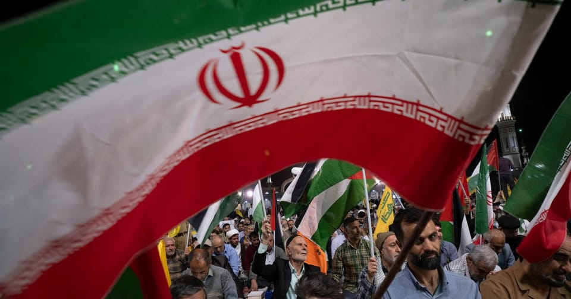

世界苦茶06月12日新闻 | 39条 | 特朗普称与中国达成协议

特朗普称与中国达成协议 | 台湾网红访问中国发表亲中态度 | 中国新能源车销量大增 | 美5月CPI增长低于预期 | 以色列恐袭击伊朗 | 马斯克为批评特朗普道歉
每天三件事：
苦茶数据
美元兑人民币：7.18（昨日7.18，前日7.18）
美元兑日元：143.95（昨日145.17，前日144.57）
上证指数：3404（昨日3407，前日3384）
标普500指数：6022（昨日6038，前日6005）
比特币：107751（昨日109553，前日104002）
布伦特原油：69.46（昨日66.88，前日67.49）
中国新闻
• 教育部拟设大湾区大学 ：中国教育部拟同意设立大湾区大学，校区位于广东东莞。中国教育部星期三在官网发布《关于拟同意设置本科高等学校的公示》，其中包括“设立大湾区大学”。据大湾区大学官网介绍，大湾区大学是由广东省政府举办、东莞市政府投入保障为主的公办普通高等学校；建成后将开展本科生、硕士及博士研究生的全日制学历教育，计划到2030年招生人数要达到10000人，且本科和研究生的规模比例为1:1。
• 中方强调中美应维护对话 ：中美经贸中方牵头人、中国副总理何立峰说，中国对中美经贸磋商是有诚意的，也是有原则的，下一步，中美双方应共同维护来之不易的对话成果，继续保持沟通对话。中美贸易谈判代表于当地时间星期一至星期二在伦敦举行中美经贸磋商机制首次会议。新华社报道称，中美双方进行坦诚、深入的对话，就各自关心的经贸议题深入交换意见，就落实两国元首6月5日通话重要共识和巩固日内瓦经贸会谈成果的措施框架达成原则一致，就解决双方彼此经贸关切取得新进展。
• 馆长访陆呼吁两岸和平 ：台湾网红“馆长”赴中国大陆访问时，呼吁两岸永远保持和平，“自己人不打自己人”。综合台湾《联合报》和风传媒报道，馆长星期三开启第二天在上海的行程，他当天中午在知名小笼包餐厅用餐后，沿着南京路步行至外滩。馆长受访时称，上海的建筑风格、城市规模和基础建设远超台北，“台北根本没办法比，差太多了”。
• 习近平下周访问哈萨克 ：中国国家主席习近平据报将于下星期一和星期二访问哈萨克斯坦。哈萨克斯坦总统新闻办公室星期三在官方X上发文表示，习近平到时将在首都阿斯塔纳与哈国总统托卡耶夫进行高层双边会谈。两国元首届时会就进一步深化哈中全面战略伙伴关系议题进行讨论。贴文说，第二届中亚—中国峰会也将于下星期二举行。
• 国台办批撤台籍教授身份 ：针对在台任教的老师张立齐因持中国大陆定居证被撤销台湾身份，中国大陆国台办批台湾民进党政府蛮横霸道、恃强凌弱。中国大陆国台办星期三召开例行新闻发布会。国台办发言人朱凤莲说，定居证是发放给被批准到大陆定居落户的台湾居民短期持有的一种临时性、过渡性身份证件，不等于大陆户籍。持证人若没有在规定时间内到大陆公安机关办理落户手续，定居证将过期失效。朱凤莲批评台湾陆委会的说辞显露其蛮横霸道、恃强凌弱的真实面目，暴露出民进党滥用司法打压迫害普通民众、威胁恐吓台湾同胞的险恶用心。“这种倒行逆施严重损害台湾民众正当权益，严重破坏两岸人民往来和交流，已经遭到越来越多台湾民众的强烈不满和坚决反对。”
• 马英九将率学生访大陆 ：台湾前总统马英九将率领台湾大学生赴中国大陆，出席海峡论坛等交流活动。马英九基金会执行长萧旭岑星期三发布新闻稿称，应中国大陆邀请，马英九将于6月14日至27日率领“大九学堂”学员访问大陆，期间将出席在福建厦门举行的第十七届海峡论坛，以及在甘肃敦煌举行的“两岸共同弘扬中华文化”活动。萧旭岑透露，除了马英九与台湾大学生外，此行还包括他本人、马英九办公室主任王光慈，以及政治大学荣誉教授邱坤玄同行。
• 港警封禁涉独游戏《逆统战》 ：香港警务处国家安全处公布，台湾手机游戏《逆统战：烽火》涉宣扬“台独”“港独”、鼓吹武装革命等主张，已根据《香港国安法》就游戏的电子信息作出禁制行动。警方也说，任何人下载或付款属犯罪。综合《明报》和《星岛日报》报道，香港警务处国家安全处星期二公布，《逆统战：烽火》涉宣扬“台独”“港独”、鼓吹武装革命等主张，经香港保安局局长批准，已根据《香港国安法第43条实施细则》附表四，就《逆统战：烽火》的电子信息作出禁制行动。香港警务处国家安全处曾以上述实施细则附表四中的权力，封锁或要求境外网站删除信息，此次则是警方首次主动公布使用附表四权力。保安局及警方没有进一步透露涉及什么禁制行动。
亚太印太新闻
• 花莲近海6.4级地震 ：台湾花莲县附近海域星期三发生6.4级地震，台东县地区最大震度达5级。台湾中央气象署星期三在官网发布通报，当天晚上7时发生6.4级地震，地震深度30.9公里，震央在花莲县政府南方69.9公里，位于台湾东部海域。台东最大震度5弱、花莲、南投、嘉义县、云林、台中、彰化、苗栗4级，高雄、宜兰、台南、嘉义市、屏东、新竹县、桃园、新北、台北市3级，新竹市、基隆市、澎湖县2级。
• 国民党启动“爱国者行动” ：台湾在野的国民党在反罢免行动接连遇挫后，国民党主席朱立伦宣布全党进入“爱国者行动”战斗状态，誓言要全面捍卫蓝营立委席次。综合台湾《联合报》《上报》报道，朱立伦星期三在主持中常会时说，随着大罢免行动即将迈入第三阶段，国民党必须全力应对。他宣布全党进入战斗状态，要求党员面对各方“空袭”和“敌人”，要如“爱国者导弹”般守护台湾的民主与安全。朱立伦说，接下来的几个阶段必须全力投入：首先是往地方部署，致力守护31个面临罢免的国民党立委选区；接着是推动区域联防，整合周边力量、跨区协调。党中央也将成立“护民主助讲团”，由立法院长韩国瑜、中广前董事长赵少康等党内要角共同参与、团结应战。
• 韩暂停对朝扩音喊话 ：韩国军方6月11日按照上级指示暂停对朝扩音器喊话。国防部相关人士表示，此举是总统李在明落实其竞选纲领的一环。李在明曾承诺停止对朝扩音器喊话，以缓和韩朝紧张局势。
科技新闻
• 特斯拉6月底推自动德士 ：电动汽车巨头特斯拉的首席执行官马斯克说，公司计划6月底开始向公众提供机器人驾驶德士服务。路透社报道，亿万富翁马斯克现在将特斯拉的未来押注在自动化驾驶上，公司估值很大程度上也取决于这一愿景。他星期二在X发文宣布，特斯拉的机器人驾驶德士服务将从6月22日开始，面向公众推出。特斯拉的投资者和支持者，正热切期待这项承诺已久的服务问世。不过，鉴于安全隐患、监管严格和投资巨大，自动驾驶汽车的商业化进程一直充满挑战，许多人对马斯克的计划持怀疑态度。
• 白宫称中美AI差距缩小 ：美国白宫人工智能事务主管萨克斯说，中国在AI模型方面仅落后美国三到六个月。他并警告，若政府过度监管AI产业，可能会使美国失去市场主导地位，把市场拱手让给中国。路透社指出，这番言论意味着美国的AI政策重心可能会转向推动AI晶片和模型向更大范围的市场出口，以加强美国在全球市场的主导地位，与中国竞争。萨克斯星期二在华盛顿举行的亚马逊科技技术峰会上说：“中国在AI领域并没有比我们落后很多年，可能只差三到六个月，这是一场势均力敌的竞赛。” （翻評：這些話中國人別當真，其實這些話的關鍵都是“若政府过度监管AI产业...”）
财经新闻
• 美中贸易框架协议初步达成 ：美国总统特朗普星期三宣称，经过两天的贸易谈判，华盛顿和北京已达成贸易框架协议，其中包括北京方面“预先”供应稀土，以及允许中国学生在美国大学就读。法新社报道，特朗普在社交媒体上发文称：“我们与中国的协议已经完成，但需经习近平主席和我最终批准。”特朗普的发言中也包含一些谈判代表未提及的条款，例如中国必须立即供应关键矿产。他还说，美国的关税税率将总计达到55%，但具体税率尚不清楚。
• 拉加德批贸易胁迫政策 ：欧洲中央银行行长拉加德说，霸凌行为在全球贸易中走不远，即使面临地缘政治分歧，各国也必须追求合作解决方案。彭博社报道，拉加德星期三在北京中国人民银行发表演讲，她表明：“胁迫性的贸易政策并非解决当前贸易紧张局势的可持续方案。”美国总统特朗普计划对大多数贸易伙伴加征关税，各国政府纷纷在关税措施正式生效前，加紧与特朗普政府谈判达成贸易协定。
• 中国新能源车销量大增 ：中国新能源汽车今年首五月产销快速增长，同比增幅均超四成，新能源汽车销量已占新车总销量的44%。据新华社引述中国汽车工业协会的数据报道，今年1月至5月，中国汽车总生产1282万6000辆、销售1274万8000辆，同比分别增长12.7%和10.9%。其中，新能源汽车同期产量和销量分别达569万9000辆和560万8000辆，同比分别增长45.2%和44%。数据显示，中国汽车1月至5月国内销量达1025万8000辆，同比增长11.7%；5月单月国内销量则达213万5000辆，环比增长3%，同比增长10.3%。
• 中国宣布非洲零关税优惠 ：中国宣布对53个非洲建交国落实100%税目产品零关税举措，并点名呼吁美国回到以平等、尊重、互惠方式磋商解决贸易分歧的正确轨道。据中国外交部官网消息，中非合作论坛成果落实协调人部长级会议星期三在湖南长沙举行，中国外长王毅与非洲53国外长会面，会后双方发表《中非维护全球南方团结合作的长沙宣言》。《宣言》表明，中国愿通过商签共同发展经济伙伴关系协定，对除斯威士兰外53个非洲建交国落实100%税目产品零关税举措，欢迎非洲优质商品进入中国市场。斯威士兰是台湾在非洲唯一的邦交国。 (翻評：本來對33個聯合國認定不發達國家就是0關稅，真正受益的國家就是南非、尼日利亞、埃及、肯尼亞。)
• 金力永磁获稀土出口许可 ：中国稀土磁铁制造商金力永磁星期三说，该公司已获得向美国、欧洲和东南亚等地区出口磁铁、电机转子和零部件等稀土产品的许可证。据路透社报道，金力永磁在深圳证券交易所的官方投资者关系平台上称，中国在4月将几种稀土矿物及相关磁铁列入出口管制清单后，该公司已申请许可证，目前申请正“陆续”获得批准。金力永磁并未透露许可证何时获准。不过，该公司在中美官员于伦敦达成协议后不久宣布了这一消息。美国商务部长卢特尼克说，该协议将“解决”稀土限制问题。 （翻評：但中國現在依然會限制出口數量，不讓其他國家可以形成一定程度的稀土庫存。）
• 美国财长暗示将延长对等关税暂停期限： 美国财政部长贝森特11日表示，可能延长“对等关税”加征部分的暂停期限。他在众议院委员会表示，正在与18个重要国家及地区推进贸易谈判力争达成协议，“为了继续展开有诚意的谈判，打算延长期限”。目前的暂停期限为90天，至7月9日为止。特朗普虽就延长向媒体称 “我认为没有必要”，但他并未否定这种可能性。他还以日韩为例对谈判取得进展表示期待。美国政府4月5日对几乎所有国家统一加征 10% 的对等关税，9日又推出根据贸易逆差额实施的针对性增加措施，后因金融市场出现动荡决定暂停90天至7月9日。
• 韩国对Temu下达整改罚款 ：韩国公正交易委员会周三表示，以涉嫌违反《关于确保标记和广告公正性的法律》为由对中国跨境电商 Temu 下达整改命令，并处以3.57亿韩元罚款。Temu涉嫌从2023年9月至近期进行抽奖赠品活动，但没有明确标记具体规则。看似可轻易获得积分或赠品的活动设置了复杂的规则，相关规则字体微小用户难以看清。公正交易委认为， Temu 的广告存在欺骗性质，有让消费者误解之虞，阻碍公平交易，属于欺骗性广告。
• 美国5月消费者价格涨幅低于预期，特朗普再次呼吁美联储降息 ：美国劳工统计局公布，5月消费者物价指数环比上涨0.1%，4月上涨0.2%。路透调查的经济学家此前预测为上涨0.2%。消费者价格涨幅低于预期，是因为汽油价格下跌部分抵消了租金上涨的影响，但在特朗普政府征收进口关税的背景下，预计未来几个月通胀将加速。报告还显示，5月核心价格压力减弱。经济学家表示，通胀对特朗普总统的全面关税反应迟缓，因为大多数零售商仍在销售关税生效前囤积的商品。特朗普在数据公布后再次呼吁美联储大幅降息，称5月CPI是一个"很棒"的数字，并在Truth Social上写道："美联储应该降息整整一个百分点。这样即将到期的债务就可以支付更少的利息。太重要了！！"CPI数据公布后，利率期货市场增加了美联储在9月会议上降息的押注。
• 英财相以2万亿英镑支出计划促增长挽民心，医疗国防和基建优先 ：英国财政大臣里夫斯将医疗、国防和基础设施项目支出列为优先事项，以推动经济增长，试图重启工党政府向日益失望的选民许下的美好未来承诺。里夫斯制定了2026年至2029年的政府部门日常预算以及到2030年的投资计划，她说，此次支出审查的优先事项是“劳动人民”的优先关切。预算所涉期间的总支出将超过2万亿英镑，不过很大一部分资金已先期拨付。
• 美国5月预算赤字降至3160亿美元，因关税收入猛增 ：美国财政部周三公布，5月份预算赤字为3160亿美元，比去年同期减少9%，即310亿美元，因美国总统特朗普征收新的高额进口关税，5月份美国海关税收几乎翻了两番，达到创纪录的230亿美元。在关税的推动下，5月政府收入达到3710亿美元，同比增长15%，即480亿美元；支出达到6870 亿美元，增加约160亿美元。
• 一汽、东风、长安、广汽、北汽、上汽、奇瑞、赛力斯、吉利、比亚迪、长城、江淮等至少17家车企近日承诺将供应商账期统一至60天内： 以上车企均表示，此举是为了贯彻落实《保障中小企业款项支付条例》，保障产业链供应链稳定、促进汽车产业高质量发展。《保障中小企业款项支付条例》6月1日正式施行，核心内容包括明确60日支付期限、禁止强制接受商业汇票等非现金支付方式、强化协同监管体系等。
俄乌战争
• 俄提议转移伊朗核材料 ：俄罗斯星期三说，已准备好从伊朗撤出核材料，并将其转化为燃料，以弥合美伊两国在伊朗核问题谈判上的分歧。路透社报道，负责军控和美俄关系的俄罗斯副外长里亚布科夫星期三对俄罗斯媒体表示，应加倍努力达成解决方案，莫斯科愿意在理念和实际行动上提供帮助。“我们准备向华盛顿和德黑兰提供援助，不仅在政治上，不仅在谈判过程中提出可能有用的理念，而且在实际行动上：例如，帮助出口伊朗生产的多余核材料，并将其用于生产反应堆燃料。”
• 俄美谈判转至莫斯科进行 ：俄罗斯驻美国大使达尔奇耶夫说，解决俄美双边关系问题的谈判，将从土耳其伊斯坦布尔转到俄罗斯首都莫斯科进行。达尔奇耶夫3月26日就任俄罗斯驻美国大使。他在俄罗斯塔斯社星期三发布的采访中说，恢复俄美关系仍任重道远，双方的和解进程，正受到美国“深层政府”和国会中反俄鹰派势力的阻碍。美国总统特朗普今年1月底重返白宫后，开始与俄罗斯政府接触，尝试重置自2022年2月俄罗斯入侵乌克兰后跌入谷底的俄美关系。
其他新闻
• 美国国务院6月11日已下令美国驻伊拉克使馆非必要人员及其家属撤离，并批准美国驻巴林和科威特使馆的非必要人员及其家属撤离： 国务院称，此举是出于最新的分析和对保护美国人安全的承诺。美国国防部长赫格塞思当天也授权中东地区的美军军属自愿撤离。美军中央司令部正在监视中东地区的局势发展。近日，美国和伊朗关于伊朗核问题的谈判似乎陷入僵局。虽然第六轮会谈暂定本周末举行，但美国官员认为会谈的可能性似乎越来越小。美国总统特朗普此前曾表态若谈判失败，以色列或美国可能会空袭伊朗核设施。而且他本人受访时坦言对达成协议“越来越没信心”。伊朗则回应称，压倒性武力的威胁不会改变事实，伊朗不寻求核武器，美国的军国主义只会加剧不稳定。
• 多方消息称以色列准备对伊朗发动军事行动： 多位消息人士告诉CBS新闻，美国官员已被告知，以色列已做好对伊朗发动军事行动的全面准备。美国方面预期，伊朗可能会对其在伊拉克邻近地区的某些美国设施进行报复。这也是美国国务院周三早些时候建议部分美国人撤离该地区的部分原因。国务院已下令所有非紧急政府人员撤离伊拉克，理由是“地区紧张局势升级”。一名国防官员表示，五角大楼也已授权军属自愿撤离中东地区的各个地点。
• 美驻以大使称不再挺巴国 ：美国驻以色列大使赫卡比说，他认为一个独立的巴勒斯坦国已不再是美国外交政策的目标。路透社报道，赫卡比星期二接受彭博社采访时，发表这一看法。美国国务院发言人布鲁斯在当天的例行记者会上，被问及赫卡比这番言论是否代表美国政策发生转变。他拒绝对此作出评论，称政策制定是总统特朗普和白宫的事务。
• 以色列袭加沙致35死 ：以色列星期三对加沙地带发动袭击，造成至少35名巴勒斯坦人死亡，其中大多发生在美国支持的加沙人道主义基金会运营的一个援助站附近。路透社报道，希法医院和圣城医院的医务官员说，至少25人在接近加沙中部内扎里姆定居点附近的援助站时丧生，数十人受伤。他们补充说，在加沙南部汗尤尼斯，也有10人在以军袭击中丧生。以色列军方说，其驻扎在内扎里姆的部队夜间向接近他们并构成威胁的嫌疑人鸣枪示警。“尽管已警告该地区是活跃战区，对方仍在靠近。以色列国防军已获悉有关人员受伤的报告，详情正在审查中。”
• 匈牙利人举行大规模抗议，宣称对欧尔班政府进行抵抗： 周二，大约15,000名抗议者聚集在匈牙利首都的一处广场上，组织者称这是对民粹主义总理维克多·欧尔班政府发起抵抗运动的开端。近二十位公众人物，包括作家、演员、音乐家和记者，参加了此次布达佩斯的集会。大多数发言者批评了他们认为政府日益反民主的行为，一些人还指控与欧尔班所领导的青民盟党关系密切者从腐败中获利。发言人博戈什·查巴表示：“这个国家不属于那些撒谎的人、不属于那些掠夺人民、不属于那些为了权力出卖人性的家伙。这个国家属于那些敢于思考、能读懂言外之意、彼此信任、相信我们可以共同建设一个和平未来的人。”
• 巴勒斯坦总统表示哈马斯必须退出加沙： 巴勒斯坦民族权力机构主席马哈茂德·阿巴斯呼吁哈马斯“交出武器”，立即释放所有人质，并停止对加沙地带的统治。法国总统府在收到他的一封信后于周二发布了上述信息。此信是写给法国总统马克龙和沙特王储穆罕默德·本·萨勒曼的，他们将于下周在纽约共同主持一次联合国会议，探讨建立巴勒斯坦国的可能性。马克龙已为法国可能在会议上承认巴勒斯坦国设定了一系列条件，其中包括哈马斯解除武装。根据爱丽舍宫的声明，阿巴斯在信中表示：“哈马斯将不再统治加沙，必须将其武器和军事能力移交给巴勒斯坦安全部队。”他补充说，巴勒斯坦部队将在阿拉伯国家和国际社会的支持下，主导哈马斯的清除工作，而这一计划无疑会引发以色列方面的怀疑，也可能引起华盛顿的不安。信中还写道：“哈马斯必须立即释放所有人质和被俘者。”这项要求是阿巴斯此前也曾提出的。
• 美财政部拟撤高校免税资格 ：美国财政部正在考虑修改规定，取消那些在学生录取、奖学金和其他方面考虑种族因素的高校的免税资格。此举可能会威胁到众多院校的财务稳定。彭博社引述知情人士说，根据拟议中的规定，如果私立非营利性高校在经济援助、贷款、设施使用或其他项目中给予特定种族群体优待，则将不再享有免税地位。上述知情人士中包括一名财政部税收政策办公室的工作人员。上述因讨论未公开对话而要求匿名的知情人士说，办公室一直在审阅草案的措辞。提案正以国税局税收程序指引的形式拟定。这是一种解释和执行税法的指南，无需国会批准即可生效。
• 特朗普对伊核协议信心减弱 ：据星期三发布的采访报道，美国总统特朗普说，他对伊朗是否会在与华盛顿达成的核协议中同意停止铀浓缩活动，感到信心不足。路透社报道，当被问及是否认为他能让伊朗同意停止核计划时，特朗普在“Pod Force One”播客中回答道：“我不知道。我以前确实这么认为，但我对此越来越没有信心了。”特朗普正寻求一项新的核协议，以限制伊朗有争议的铀浓缩活动，并威胁如果达不成协议，将对伊朗实施轰炸。
• 美伊第六轮核谈将在阿曼举行 ：美国与伊朗之间的第六轮核谈判，定于星期天举行。法新社报道，伊朗外交部发言人巴盖伊星期二宣布，与华盛顿的新一轮间接核谈判，将于星期天在阿曼首都马斯喀特举行。阿曼方面尚未就此发表评论。美国总统特朗普早前表明，会谈最早可能在星期四举行，但一名熟悉会谈筹备情况的消息人士透露，第六轮谈判更有可能在星期五或星期六进行。
• 美欧提交决议谴责伊朗 ：欧洲大国和美国向联合国核监督机构国际原子能机构提交一份决议草案，谴责伊朗未能履行其核义务。法新社报道，三名外交消息人士星期二透露，法国、德国、英国和美国在本周于维也纳举行的国际原子能机构理事会会议上，正式提交这份决议草案。草案预计最早于当地时间星期三晚上进行表决。这是以美国为主的西方国家多年来限制伊朗核活动的最新举措。在此之前，美国和伊朗已在阿曼斡旋下，就伊朗核问题举行五轮谈判。
• 北爱小城爆反移民骚乱 ：英国北爱尔兰北部一个小城一连两晚发生反移民暴动，数百名蒙面暴徒袭击警察并焚烧房屋和汽车，警方最终逮捕五人。这个小城巴利米纳的两名少年星期一因涉及性侵一名少女出庭受审，并要求提供罗马尼亚语通译。庭审结束数小时后，大批人群在市中心附近聚集，起初人们和平表达诉求，但局势逐渐失控，骚乱迅速蔓延。警方说，当晚的骚乱中，多辆警车被破坏，四栋房子被烧毁，另有一些房子和商店窗户被砸碎。
• 奥地利校园枪击致10死 ：奥地利当局星期三正在寻找线索，以查明南部城市格拉茨一所学校为何发生枪击案，导致10人死亡。路透社报道，该校宗教研究老师尼切说，他在枪手进入教室前离开了教室，并看到他试图打开另一扇门的锁。他告诉国家广播公司ORF：“这是我以前无法想象的事情。我跑下楼梯时，当时的情景就是这样。我心想：‘这不是真的。’”
• 特朗普警告阅兵勿抗议 ：美国总统特朗普星期二警告民众，不要在纪念美国陆军成立250周年的阅兵式上进行抗议。路透社报道，特朗普在白宫对记者说：“对于那些想要抗议的人，他们将面临非常强大的武力镇压。”美国特勤局特工主管麦库尔星期一说，执法机构正在为6月14日于华盛顿特区举行的数十万人参加阅兵式做准备。
• 马斯克为批评特朗普道歉 ：马斯克星期三说，他对上周发布的一些关于美国总统特朗普的帖子感到后悔，认为它们“太过分了”。路透社报道，马斯克星期三在其社交媒体平台X上发帖称：“我对上周发布的一些关于唐纳德·特朗普总统的帖子感到后悔。它们太过分了。”但他并未透露具体指的是哪些帖子。在马斯克发布帖子后，特斯拉在法兰克福的股价上涨了2.7%。
• 得州部署国民警卫维稳 ：美国特朗普政府向爆发声援移民示威的洛杉矶派遣国民警卫队和海军陆战队员后，得克萨斯州也将部署国民警卫维持秩序。得州共和党籍州长阿伯特星期三在X发文宣布，将在得州各地部署国民警卫队人员，以维护和平与秩序。他写道：“和平抗议是合法的。伤害他人或财产则是违法的，肇事者将被逮捕。”他补充说，得州警卫队会使用一切工具和策略，协助执法部门维持秩序。